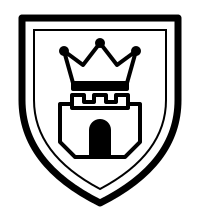
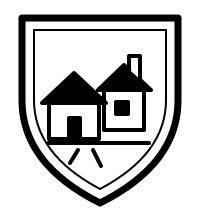
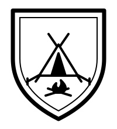
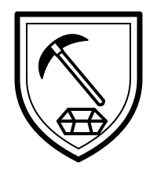
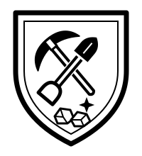
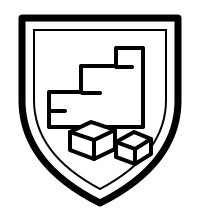
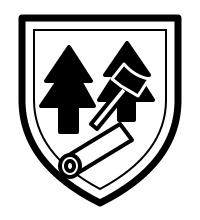
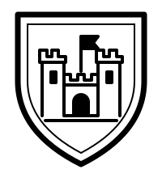

Armoiries des lieux — essais
Noir et blanc, même écu pour les neuf lieux. Chaque dessin est également présenté à 18 mm de haut. Imprimer à 100 % pour comparer la lisibilité. Ces essais ne remplacent pas encore les illustrations du jeu.

CapitaleVille
Village
Camp
Mine de fer
Mine d’or
Carrière
Forêt de bûcherons
Fort